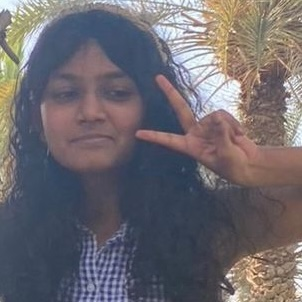
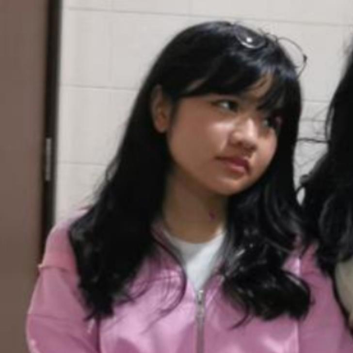
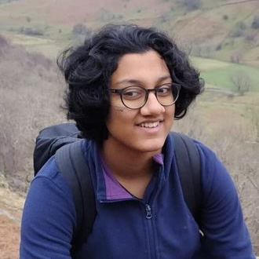
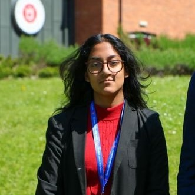
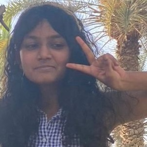
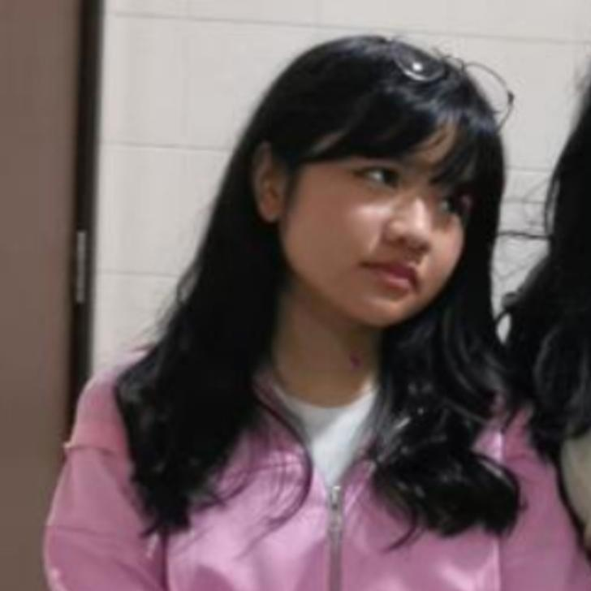
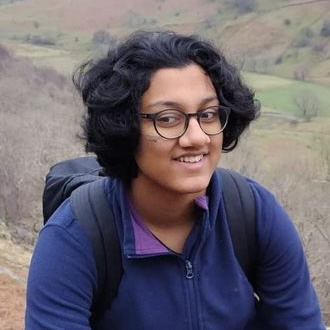
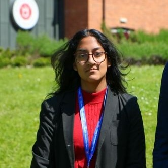

WHO WE ARE
img src="Manahil.jpeg" width="80px" height="auto">
Manahil Rashid Awan
Alana Sirui Zhou
Nethmini Mackenzy

Sarah Wilson

Raisa Widianto

Simone Pradhan

Kaylee Gracias

Saloni Pradhan
Eshaal Wajahat
TOOMCA, or tales of our murderous, colonial architects, was founded in 2020 by Manahil Awan and has ever since been supported by friends around the world excited about the cause of historical reconciliation. She is joined by representatives from New Jersey to Tokyo, all making valuable contributions to their societies by recording oral histories to aid or at times defy the mainstream historical narrative. History is not what you were taught, and we are a youth coalition garnering support to supplement curriculums worldwide.
img src="Manahil.jpeg" width="80px" height="auto">
Manahil Rashid Awan
Alana Sirui Zhou
Nethmini Mackenzy

Sarah Wilson

Raisa Widianto

Simone Pradhan
Kaylee Gracias

Saloni Pradhan
Eshaal Wajahat
We decided on ‘tales of our murderous, colonial architects’ because mainstream discourse tends to go two ways, either previously coloniser countries claiming all success of countries post-independence due to the building of railroads or saying a country’s reason for failure is due to independence from the coloniser, rather than accepting that colonisation may be the reason for drained resources. In that way, the words ‘colonial, murderous architects’ mock this discourse for its coloniser-centric view.
We often experience this pushback when we talk about this project, however, we have four reasons for our focus.
1) Colonialism is not something that just dissipates after a country’s independence or imperialism is not something that disappears after countries enforce boundaries and try to remind expansionists of their sovereignty. It is ongoing, and its impact ripples through time.
2) Revisiting history makes sense of intergenerational trauma, lost family members and most importantly trying to make permanence out of fading memories.
3) What happens when imperialist countries attempt to make a ‘kinder’ version of events to teach their children and nobody is looking (negationism)? When children grow into adults with no awareness of how their own country was or still is an oppressor? When one country teaches history and the other negates it?
4) The impact is what can be known as systematic brainwashing where certain events are flooded out of one’s system and generations, as they grow to become influential, dictate a wildly different version of history (revisionism). We then treat people differently on an individual level and countries on a global level.